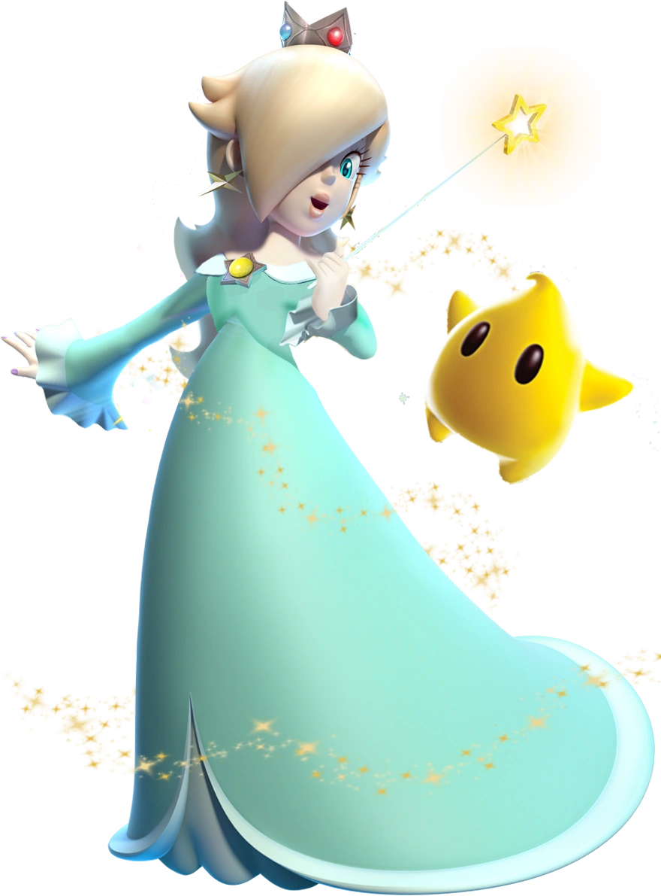

História
No começo, ela era uma garotinha orfã quando encontrou uma Luma procurando a sua mãe, e as Lumas viajam pelas galáxias juntas em busca de suas mães desaparecidas. Ao chegar em seu observatório, ela lê histórias para as Lumas dormirem toda noite na biblioteca e ali mesmo o seu coração mágico despertou e ela se tornou a Princesa Rosalina,
protetora das Lumas e de suas Galáxias, ela também comanda o Coração de Cristal Luma, muitas pessoas que assistem "mariolore" do canal dinobunnycosplay pensam que ela é apaixonada pelo king boo, mas não é canonico.
